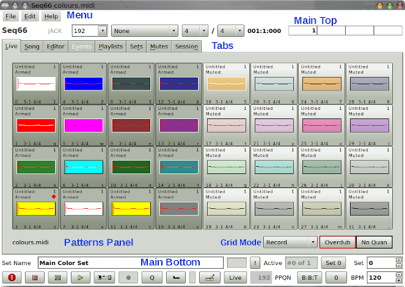

-
Menu.
Provides some expected functions, including opening,
saving, import/export, recent files, help....
-
Main Top bar.
Provides status and time information, and allows
for changing the MIDI bus and time signature
of the whole song.
-
Tabs.
Tabs give compact access to various views of
Seq66.
-
Patterns Panel (Live Grid).
Shows a single set of patterns
("tracks", "loops", "sequences").
Patterns can be muted/unmuted by
clicking on them. Patterns can also be opened for
editing via a right-click menu. Keystrokes ("hot-keys")
can also activate or edit a pattern.
-
Grid Mode.
Selects what a click or hot-key does to a pattern.
"Loop" toggles the track.
"Record" mode toggles recording. There are other modes,
too.
-
Main Bottom.
The first row at the bottom allows for naming and changing
the active set.
The second bottom row has standard play/record buttons, plus
a Song/Live toggle button and a beats-per-minute indicator.
|

|